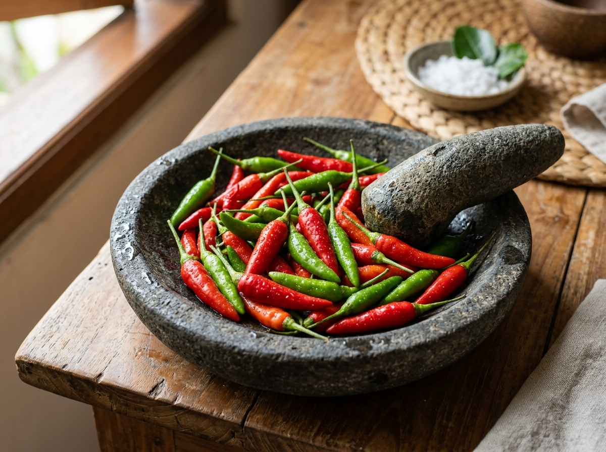

Cabai Rawit:
Kecil Barangnya, Membara Lidahnya!
Pepatah "Kecil-kecil cabe rawit" bukan sekadar omong kosong! Biarpun tubuhnya mungil, gigitan pedasnya sanggup bikin keringat dingin mengucur dan mata melek seketika.

Simulator Level Pedas Cabai Rawit
Geser slider di bawah untuk merasakan simulasi reaksi lidah warganet saat menyantap cabai rawit!
Resep Interaktif: Sambal Korek Bawang Maut
Cuma butuh 3 menit! Klik tiap langkah yang sudah kamu selesaikan untuk memantau progres memasakmu.
Bahan-Bahan Sederhana:
- 🌶️ 25 butir Cabai rawit merah & hijau campur
- 🧄 4 siung Bawang putih (kupas bersih)
- 🧂 1/2 sendok teh Garam dapur
- ✨ 1/2 sendok teh Kaldu bubuk / penyedap rasa
- 🍳 5 sendok makan Minyak goreng panas mengepul
Mitos atau Fakta Seputar Cabai Rawit?
Klik setiap kartu untuk membalik dan melihat fakta ilmiah yang mengejutkan!
"Biji cabai adalah bagian yang paling pedas?"
SALAH BESAR! Bagian paling pedas sebenarnya adalah plasenta, yaitu spons putih tempat menempelnya biji cabai. Biji terasa pedas hanya karena bersentuhan langsung dengan lapisan spons tersebut.
"Cabai rawit mengandung lebih banyak Vitamin C dibanding Jeruk?"
BENAR SEKALI! Dalam takaran berat yang sama (100 gram), cabai rawit mengandung vitamin C hingga 2 kali lipat lebih tinggi dari buah jeruk manis. Bagus untuk daya tahan tubuh, asal perutmu kuat ya!
"Makan biji cabai langsung bikin radang usus buntu?"
MITOS! Penelitian medis membuktikan bahwa persentase biji makanan penyebab radang usus buntu sangat kecil (kurang dari 1%). Usus buntu biasanya meradang akibat infeksi bakteri atau sumbatan tinja keras.